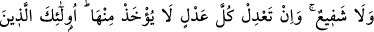
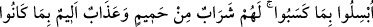
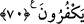
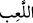
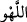
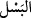

70. Dinlerini bir oyuncak ve bir eğlence edinen ve dünya hayatının aldattığı
kimseleri (bir tarafa) bırak! Kazandıkları sebebiyle hiçbir nefsin felâkete dûçar
olmaması için Kur’an ile nasihat et. O nefis için Allah’tan başka ne dost vardır, ne
de şefaatçı. O, bütün varını fidye olarak verse, yine de ondan kabul edilmez. Onlar
kazandıkları (günahlar) yüzünden helâke sürüklenmiş kimselerdir. İnkâr
ettiklerinden dolayı onlar için kaynar sudan ibaret bir içecek ve elem verici bir
azap vardır.
“Bırak o dinlerini oyun, eğlence yerine koyanları” bu ifadeden maksat, âyetler
hakkında münasebetsizce konuşan kâfirlerdir. “Onların dini” ile kastedilen de Allah’ın
onları sorumlu tuttuğu, gereklerini yerine getirmeyi emrettiği dindir ki o da İslâm’dır.
Dini oyun ve eğlence edinmeleri ile kastedilen ise din ile alay etmeleri ve onu hafife
almalarıdır.
“Oyun
”, nefsin meşgûl olduğu ve bırakmak istemediği şeydir. “Eğlence
”
ise ciddî bir meseleyi, şakaya (gayri ciddiliğe) döndürmektir.
“ve dünya hayatının aldattığı kimseleri” Onlar ki, dünya hayatı ile yetinirler ve bu
dünya hayatından başka bir hayat olmadığını iddiâ ederler. Sen o inkârcılardan yüz
çevir, onlarla birlikte olma. O kâfirlere iltifat etme! Onların seni yalanlamalarına
bakma, Allah’ın âyetleri ile alay etmelerine önemseme. Kalbini onlarla meşgul etme!
Bu ifadelerden maksat, onları korkutup uyarmaktan vazgeçmesi değildir. Çünkü âyet-i
kerîmenin devamında Allah Teâlâ şöyle buyurmaktadır: “Sen” öğüt dinleyecek olanı
“o” Kur’ân “ile uyar ki, kişi kendi yaptıkları yüzünden” işlediği kabahatler sebebiyle
“helâke uğramasın” helâkin pençesine teslim edilmesin ve helâkin elinde rehin
kalmasın.
“
” ve “
” men etmektir. Onun için “helâke teslim etme” anlamında
kullanılması caiz olur. Çünkü, “helâke teslim edilmek”, men’i, yani alıkoymayı
gerektirir. Helâk, eline teslim edilen kimseyi kendisinden çıkmaktan ve kurtulmaktan
alıkor.
Kaşifî’nin Farsça tefsirinde şöyle denilmiştir :
Dünyada yaptığı kötülükler sebebiyle her bir kâfirin nefsi helâke teslim olunur, ya da
mahşer halkına rüsvay olur.
“O gün Allah’dan başka onun ne bir dostu, ne de yardımcısı vardır.” Allah’dan
başka o mücrim nefisden azabı giderecek kimse yoktur.
“Her türlü fidyeyi verse de ondan kabul edilmez.” Yani bu mücrim nefis yaptığı
çirkin amellerin karşılığında yeryüzündekilerin tamamını fidye olarak verse de ondan